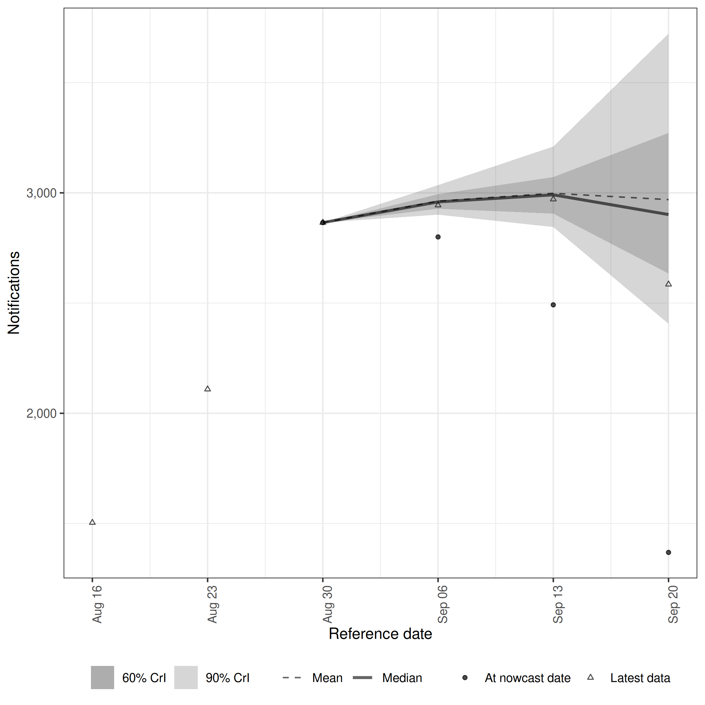
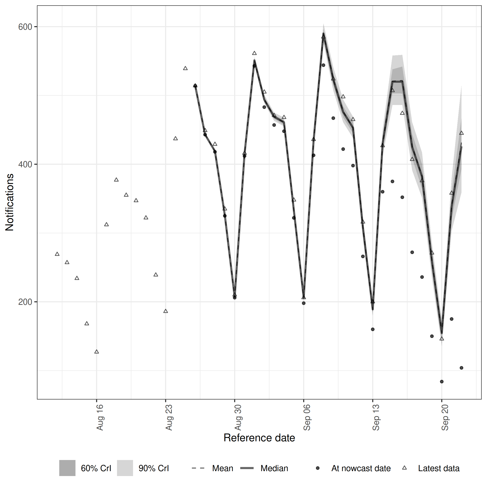
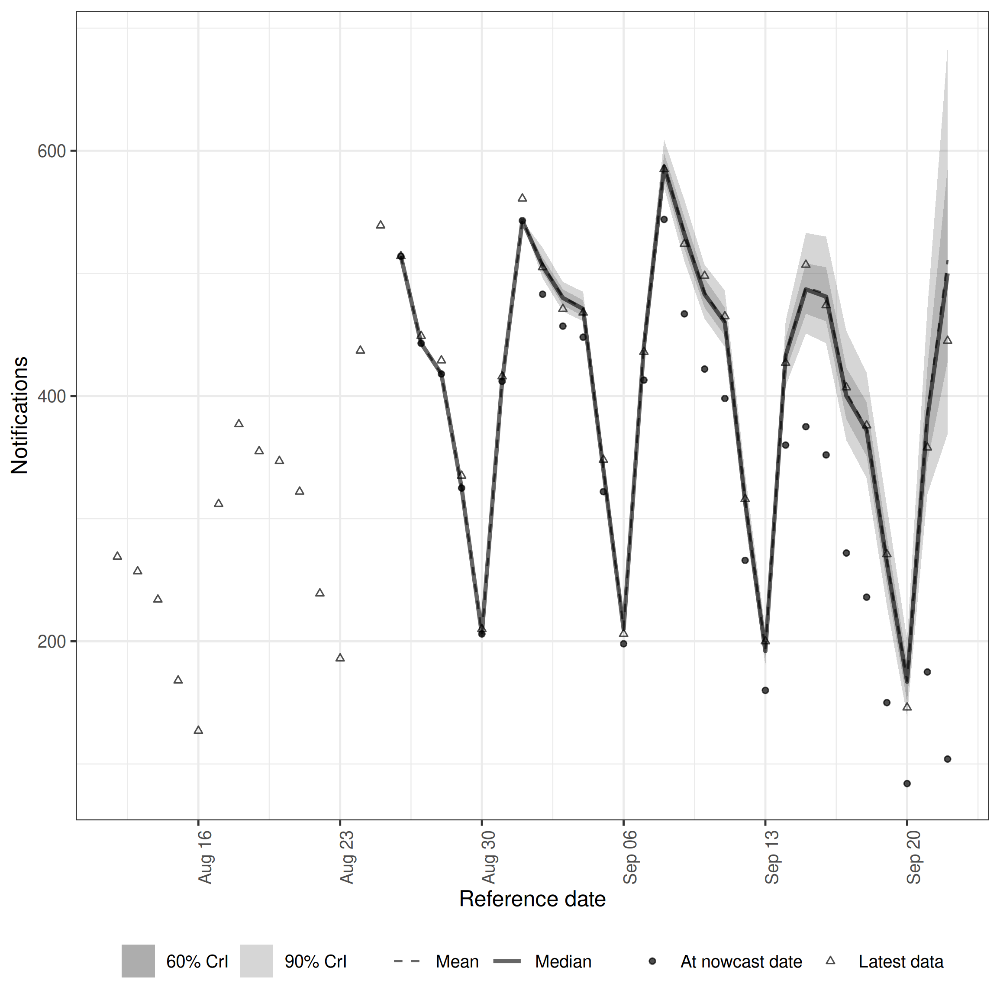
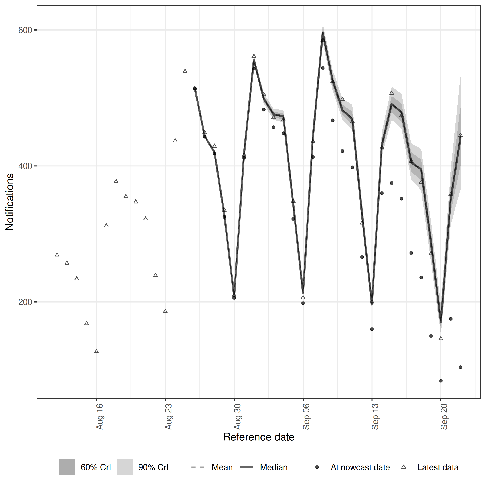
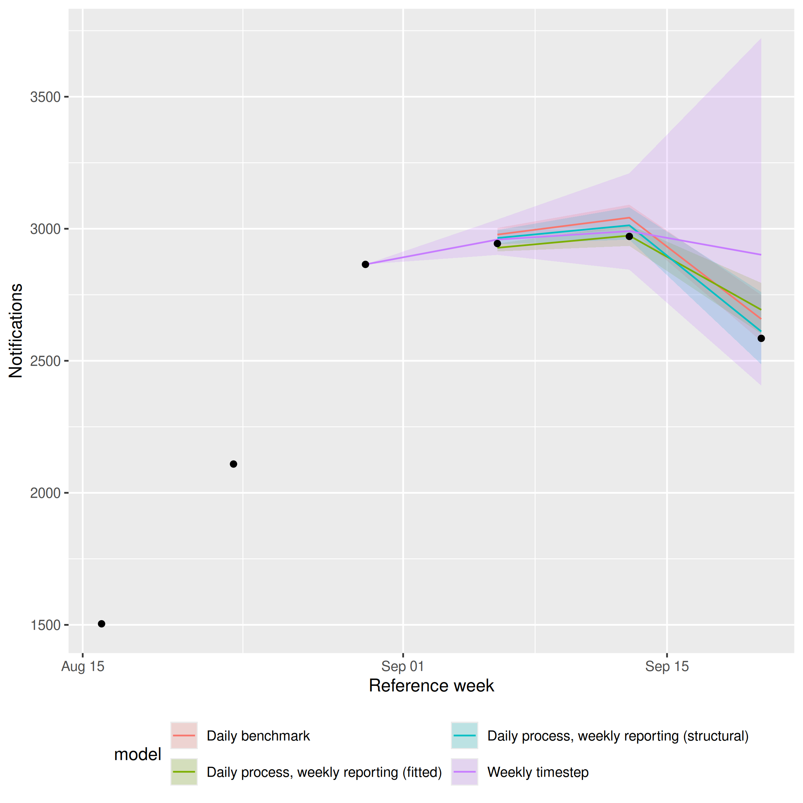
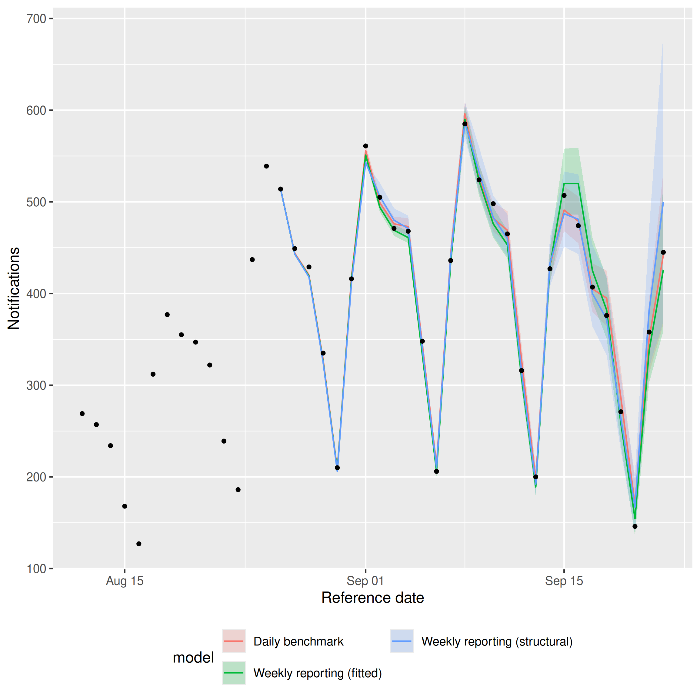

Temporal aggregation guide
Epinowcast Team
Source:vignettes/temporal-aggregation.Rmd
temporal-aggregation.RmdReal-time surveillance data are often reported at a coarser timestep than the process being modelled.
This vignette walks through some of the patterns epinowcast supports for handling this and compares them on the same series so you can see what is gained or lost at each level of aggregation.
The patterns covered are:
- Weekly timestep. Both observations and the underlying process are modelled at a weekly resolution.
- Daily process with weekly reporting. Observations only arrive on one day per week (here Wednesday) but the latent process is daily. We show two variants: one with a fitted day-of-week reporting effect and one with a structural reporting assumption.
- Daily timestep. Both observations and the underlying process are daily.
We fit four models on the same retrospective slice of the German COVID-19 hospitalisation data and compare them visually and using the continuous ranked probability score (CRPS) from scoringutils.
Packages
Code
library(epinowcast)
library(data.table)
library(purrr)
library(ggplot2) # nolint: unused_import_linter. Required by plot.epinowcast().
library(scoringutils)
library(knitr)Code
options(mc.cores = 2)Data
We use the German COVID-19 hospitalisation data shipped with epinowcast, restricted to all-age national counts.
The retrospective slice is built once with enw_filter_report_dates() and enw_filter_reference_dates() so all four models nowcast the same reference dates.
We use a six-week window of reference dates ending 28 days before the latest available reports, mirroring the pattern in the getting started vignette.
Code
daily_max_delay <- 28
weekly_max_delay <- 4
nat_germany_hosp <- germany_covid19_hosp[
location == "DE" & age_group == "00+"
][, c("location", "age_group") := NULL]
retro_daily <- nat_germany_hosp |>
enw_filter_report_dates(remove_days = daily_max_delay) |>
enw_filter_reference_dates(include_days = 42)
retro_weekly <- nat_germany_hosp |>
enw_aggregate_cumulative(timestep = "week") |>
enw_filter_report_dates(remove_days = daily_max_delay) |>
enw_filter_reference_dates(include_days = 42)We use enw_obs_at_delay() on the full data to construct the evaluation target at each scale, then apply the same reference-date filter as the retrospective data so the nowcast and target cover the same reference dates.
Code
latest_obs_daily <- nat_germany_hosp |>
enw_obs_at_delay(max_delay = daily_max_delay) |>
enw_filter_reference_dates(
remove_days = daily_max_delay, include_days = 42
)
latest_obs_weekly <- nat_germany_hosp |>
enw_aggregate_cumulative(timestep = "week") |>
enw_obs_at_delay(max_delay = weekly_max_delay, timestep = "week") |>
enw_filter_reference_dates(
remove_days = daily_max_delay, include_days = 42
)A common fit configuration is reused across the models, with a slightly lower adapt_delta for the daily-process / weekly-reporting variants where sparse Wednesday-only observations make the posterior easier to traverse with larger steps.
Code
fit_opts_factory <- function(adapt_delta) {
enw_fit_opts(
save_warmup = FALSE, pp = TRUE,
chains = 2, iter_warmup = 500, iter_sampling = 500,
max_treedepth = 12, adapt_delta = adapt_delta,
show_messages = interactive(), refresh = 0
)
}
fit <- fit_opts_factory(0.95)
fit_weekly_rep <- fit_opts_factory(0.8)Approach 1: Weekly timestep
When data are only available aggregated to weeks and daily resolution is not required, the simplest approach is to model both observations and process at a weekly resolution. The expected count is given a random walk on the week index and the maximum delay is five weeks.
Code
pobs_weekly <- retro_weekly |>
enw_complete_dates(timestep = "week") |>
enw_preprocess_data(max_delay = weekly_max_delay, timestep = "week")Code
nowcast_weekly <- epinowcast(
pobs_weekly,
expectation = enw_expectation(~ rw(week), data = pobs_weekly),
obs = enw_obs(family = "negbin", data = pobs_weekly),
fit = fit
)Code
plot(nowcast_weekly, latest_obs = latest_obs_weekly)
Weekly nowcast on the weekly scale.
Approach 2: Daily process, weekly reporting (fitted day-of-week)
A common situation is data that are only updated once per week but are then reported with a daily resolution. Here the underlying process is modelled daily, reports arrive on Wednesdays for current and past reference dates, and the day of the week is included as a random effect in the report model so the reporting cycle can be learned from the data.
We build the reporting scaffold by keeping the cumulative count confirm on Wednesdays and setting it to NA elsewhere, then enw_impute_na_observations() carries forward the most recent Wednesday value.
The resulting daily grid is a step function in cumulative reports — flat between Wednesdays and stepping up on each one — and the fitted model uses the full grid so the day-of-week random effect can learn the spike pattern.
.observed is recorded for the structural variant in the next section but is not needed here.
Code
weekly_rep_data <- enw_complete_dates(retro_daily, timestep = "day")
weekly_rep_data[, day_of_week := weekdays(report_date)]
weekly_rep_data[
, confirm := fifelse(day_of_week == "Wednesday", confirm, NA_real_)
]
weekly_rep_data <- weekly_rep_data |>
enw_flag_observed_observations() |>
enw_impute_na_observations() |>
enw_filter_reference_dates_by_report_start() |>
enw_add_incidence()Code
pobs_weekly_rep <- weekly_rep_data |>
enw_complete_dates(timestep = "day") |>
enw_preprocess_data(max_delay = daily_max_delay, timestep = "day")Code
exp_weekly_rep <- enw_expectation(
~ rw(week) + (1 | day_of_week), data = pobs_weekly_rep
)
nowcast_weekly_rep <- epinowcast(
pobs_weekly_rep,
expectation = exp_weekly_rep,
report = enw_report(~ (1 | day_of_week), data = pobs_weekly_rep),
obs = enw_obs(family = "negbin", data = pobs_weekly_rep),
fit = fit_weekly_rep
)Code
plot(nowcast_weekly_rep, latest_obs = latest_obs_daily)
Daily-scale nowcast with fitted day-of-week reporting.
Approach 3: Daily process, weekly reporting (structural)
The same scaffold can be combined with a structural assumption that all reporting happens on a known weekday.
This removes the need to fit a day-of-week effect and is appropriate when the reporting cycle is genuinely deterministic.
enw_dayofweek_structural_reporting() constructs the reporting matrix and enw_report() is supplied with structural instead of a formula.
Note that here we also pass the .observed column to enw_report() so the model knows which daily observations are real and which are imputed from the last Wednesday.
We have to use an indicator variable for this vs. just having NA reports as our internal Stan model doesn’t support NA values.
Code
structural <- enw_dayofweek_structural_reporting(
pobs_weekly_rep, day_of_week = "Wednesday"
)
nowcast_weekly_rep_structural <- epinowcast(
pobs_weekly_rep,
expectation = exp_weekly_rep,
report = enw_report(structural = structural, data = pobs_weekly_rep),
obs = enw_obs(
family = "negbin", observation_indicator = ".observed",
data = pobs_weekly_rep
),
fit = fit_weekly_rep
)Code
plot(nowcast_weekly_rep_structural, latest_obs = latest_obs_daily)
Daily-scale nowcast with structural Wednesday-only reporting.
Approach 4: Daily timestep
For comparison we fit the same process model to the un-aggregated daily data with a fitted day-of-week reporting effect.
Code
pobs_daily <- retro_daily |>
enw_complete_dates(timestep = "day") |>
enw_preprocess_data(max_delay = daily_max_delay, timestep = "day")Code
nowcast_daily <- epinowcast(
pobs_daily,
expectation = enw_expectation(
~ rw(week) + (1 | day_of_week), data = pobs_daily
),
report = enw_report(~ (1 | day_of_week), data = pobs_daily),
obs = enw_obs(family = "negbin", data = pobs_daily),
fit = fit
)Code
plot(nowcast_daily, latest_obs = latest_obs_daily)
Daily benchmark nowcast.
Comparison
Weekly scale
We start at the weekly scale, the only resolution at which the pure weekly model is defined.
Approaches 2, 3, and 4 produce daily nowcasts that we summarise to weekly counts by summing seven daily samples into the weekly bins that enw_aggregate_cumulative() produces.
We restrict scoring to weeks where every model contributes a full seven days of daily reference dates (or the corresponding weekly bin), so all four models are scored on the same set of reference weeks.
Code
weekly_anchor_dow <- as.integer(format(
as.Date(latest_obs_weekly$reference_date[1]), "%u"
))
ceiling_to_weekly_bin <- function(x) {
x <- as.Date(x)
weekday <- as.integer(format(x, "%u"))
x + ((weekly_anchor_dow - weekday) %% 7L)
}
samples_to_weekly <- function(nowcast, daily = TRUE) {
samples <- as.data.table(summary(nowcast, type = "nowcast_samples"))
if (daily) {
# nolint start: object_usage_linter.
samples[, reference_week := ceiling_to_weekly_bin(reference_date)]
samples <- samples[
, .(sample = sum(sample), n_days = .N),
by = c("reference_week", ".draw")
]
samples <- samples[n_days == 7L][, n_days := NULL]
# nolint end
} else {
samples <- samples[, .(reference_week = as.Date(reference_date),
.draw, sample)]
}
samples
}
weekly_truth <- latest_obs_weekly[, .(
reference_week = as.Date(reference_date), observed = confirm
)]
weekly_samples <- list(
"Weekly timestep" = samples_to_weekly(nowcast_weekly, daily = FALSE),
"Daily process, weekly reporting (fitted)" =
samples_to_weekly(nowcast_weekly_rep),
"Daily process, weekly reporting (structural)" =
samples_to_weekly(nowcast_weekly_rep_structural),
"Daily benchmark" = samples_to_weekly(nowcast_daily)
)
common_weeks <- as.Date(Reduce(
intersect,
c(lapply(weekly_samples, function(s) unique(s$reference_week)),
list(weekly_truth$reference_week))
))
score_with_coverage <- function(forecast_sample) {
sample_scores <- forecast_sample |>
score() |>
summarise_scores(by = "model") |>
summarise_scores(fun = signif, digits = 2, by = "model")
quantile_scores <- forecast_sample |>
as_forecast_quantile(probs = c(0.05, 0.25, 0.5, 0.75, 0.95)) |>
score(metrics = list(
interval_coverage_50 = purrr::partial(
interval_coverage, interval_range = 50
),
interval_coverage_90 = purrr::partial(
interval_coverage, interval_range = 90
)
)) |>
summarise_scores(by = "model") |>
summarise_scores(fun = signif, digits = 2, by = "model")
merge(sample_scores, quantile_scores, by = "model", sort = FALSE)
}
scored_weekly <- map_dfr(
weekly_samples,
~ merge(.x[reference_week %in% common_weeks], weekly_truth,
by = "reference_week"),
.id = "model"
) |>
as_forecast_sample(
observed = "observed", predicted = "sample", sample_id = ".draw"
) |>
score_with_coverage()Code
kable(scored_weekly)| model | bias | dss | crps | overprediction | underprediction | dispersion | log_score | mad | ae_median | se_mean | interval_coverage_50 | interval_coverage_90 |
|---|---|---|---|---|---|---|---|---|---|---|---|---|
| Weekly timestep | 0.400 | 12.0 | 290 | 200 | 0.0 | 86.0 | 6.6 | 360 | 410 | 540000 | 0.67 | 0.67 |
| Daily process, weekly reporting (fitted) | 0.002 | 8.5 | 32 | 21 | 3.1 | 7.6 | 5.2 | 32 | 42 | 4200 | 0.33 | 0.33 |
| Daily process, weekly reporting (structural) | 0.610 | 8.3 | 21 | 10 | 0.0 | 11.0 | 5.0 | 46 | 33 | 1300 | 0.33 | 1.00 |
| Daily benchmark | 0.900 | 11.0 | 36 | 28 | 0.0 | 7.9 | 6.3 | 34 | 50 | 2900 | 0.00 | 0.33 |
Code
weekly_summary <- function(samples) {
samples[
, .(median = median(sample),
q5 = quantile(sample, 0.05),
q95 = quantile(sample, 0.95)),
by = "reference_week"
]
}
weekly_plot_data <- map_dfr(weekly_samples, weekly_summary, .id = "model")
ggplot(weekly_plot_data) +
aes(x = reference_week, colour = model, fill = model) +
geom_ribbon(aes(ymin = q5, ymax = q95), alpha = 0.2, colour = NA) +
geom_line(aes(y = median)) +
geom_point(
data = weekly_truth, aes(x = reference_week, y = observed),
inherit.aes = FALSE, size = 1.5
) +
labs(x = "Reference week", y = "Notifications") +
guides(
colour = guide_legend(nrow = 2),
fill = guide_legend(nrow = 2)
) +
theme(legend.position = "bottom")
Weekly-scale nowcasts from all four models on shared axes.
All three daily-process models score much better on weekly CRPS than the pure weekly model on this slice — by roughly an order of magnitude — driven by the latter’s rw(week) random walk having only four weekly observations to learn from, so when the series turns over at the end of the window it lacks the within-week structure needed to catch the reversal and instead extrapolates the recent rising trend.
Bias and coverage tell a more nuanced story than CRPS alone.
The daily-process models have small or near-zero bias on the daily scale but pick up a positive bias once their seven daily samples are summed: summing right-skewed posterior draws shifts the posterior mass upward and the weekly truth itself uses a slightly shorter reporting horizon than the daily samples (enw_obs_at_delay(max_delay = 4, "week") evaluates at three weeks while the daily samples are at twenty-seven days), so the same draws score well against daily truth but over-predict against weekly truth.
Coverage should ideally match the nominal level, with both under- and over-coverage indicating miscalibration: the daily benchmark has the tightest intervals and tends to under-cover, the fitted variant is closer to nominal but can still under-cover, and the structural variant tends to be wider than warranted at this aggregation.
With only a small number of common weeks scored the coverage estimates have very limited resolution and should be read as indicative rather than definitive.
On a flatter or more slowly varying series the gap between the weekly model and the daily-process models will be smaller; the gap can be larger near turning points like this one.
Daily scale
We then compare approaches 2, 3, and 4 at the daily scale to check that the weekly-reporting variants recover daily structure rather than merely producing the right weekly totals.
The pure weekly model is excluded because it has no daily output.
Daily samples are scored against latest_obs_daily over the daily reference dates that fall within the same common weeks used for the weekly comparison, so the two tables cover the same period.
Code
samples_at_daily <- function(nowcast) {
samples <- as.data.table(summary(nowcast, type = "nowcast_samples"))
samples[, .(reference_date = as.Date(reference_date), .draw, sample)]
}
daily_truth <- latest_obs_daily[, .(
reference_date = as.Date(reference_date), observed = confirm
)]
daily_samples <- list(
"Daily process, weekly reporting (fitted)" =
samples_at_daily(nowcast_weekly_rep),
"Daily process, weekly reporting (structural)" =
samples_at_daily(nowcast_weekly_rep_structural),
"Daily benchmark" = samples_at_daily(nowcast_daily)
)
common_days <- as.Date(Reduce(
intersect,
c(lapply(daily_samples, function(s) unique(s$reference_date)),
list(daily_truth$reference_date))
))
common_days <- common_days[
ceiling_to_weekly_bin(common_days) %in% common_weeks
]
scored_daily <- map_dfr(
daily_samples,
~ merge(.x[reference_date %in% common_days], daily_truth,
by = "reference_date"),
.id = "model"
) |>
as_forecast_sample(
observed = "observed", predicted = "sample", sample_id = ".draw"
) |>
score_with_coverage()Code
kable(scored_daily)| model | bias | dss | crps | overprediction | underprediction | dispersion | log_score | mad | ae_median | se_mean | interval_coverage_50 | interval_coverage_90 |
|---|---|---|---|---|---|---|---|---|---|---|---|---|
| Daily process, weekly reporting (fitted) | -0.260 | 7.0 | 7.5 | 2.00 | 3.2 | 2.3 | 4.2 | 9.8 | 10.0 | 200 | 0.48 | 0.76 |
| Daily process, weekly reporting (structural) | -0.061 | NaN | 6.1 | 0.91 | 1.9 | 3.3 | Inf | 14.0 | 7.6 | 90 | 0.62 | 0.90 |
| Daily benchmark | 0.130 | 5.3 | 5.3 | 1.80 | 1.2 | 2.4 | 3.5 | 10.0 | 7.6 | 100 | 0.43 | 1.00 |
Code
nowcast_summary_for <- function(nowcast) {
as.data.table(summary(nowcast, type = "nowcast"))[
, .(reference_date = as.Date(reference_date), median, q5, q95)
]
}
daily_plot_data <- map_dfr(
list(
"Weekly reporting (fitted)" =
nowcast_summary_for(nowcast_weekly_rep),
"Weekly reporting (structural)" =
nowcast_summary_for(nowcast_weekly_rep_structural),
"Daily benchmark" = nowcast_summary_for(nowcast_daily)
),
identity, .id = "model"
)
ggplot(daily_plot_data) +
aes(x = reference_date, colour = model, fill = model) +
geom_ribbon(aes(ymin = q5, ymax = q95), alpha = 0.2, colour = NA) +
geom_line(aes(y = median)) +
geom_point(
data = latest_obs_daily,
aes(x = as.Date(reference_date), y = confirm),
inherit.aes = FALSE, size = 1
) +
labs(x = "Reference date", y = "Notifications") +
guides(
colour = guide_legend(nrow = 2),
fill = guide_legend(nrow = 2)
) +
theme(legend.position = "bottom")
Daily-scale nowcasts from the three daily-process models on shared axes.
The daily benchmark has the lowest daily CRPS, as expected from the model with access to the full daily data. The two weekly-reporting variants are close behind: the structural variant tracks the benchmark very closely on CRPS, bias and coverage, while the fitted variant is a little wider with slightly negative bias and somewhat below-nominal coverage. This is the pay-off for using a daily latent process with a known reporting cycle: even when reporting only happens once a week, the daily-scale nowcasts barely degrade compared with a fully daily fit.
The structural variant typically lands close to nominal coverage on this slice, the benchmark close to or slightly above nominal, and the fitted variant a little below; in all three the median tracks the truth closely.
Where coverage is off, the most likely cause is the default lognormal reporting delay with no temporal variation rather than the temporal scaffold itself.
A non-parametric or time-varying delay (or an explicit day-of-week effect on the reporting hazard) would give the model the flexibility to track the lengthening tail; see getting started and ?enw_reference for the available options.
Together with the weekly-scale results above, this means the weekly-reporting scaffold gives up very little in either direction: it stays competitive at weekly aggregation and recovers the daily structure that a pure weekly model cannot represent at all.
Runtime
Different approaches also have different computational costs.
Code
runtimes <- data.table(
Model = c(
"Weekly timestep",
"Daily process, weekly reporting (fitted)",
"Daily process, weekly reporting (structural)",
"Daily benchmark"
),
`Run time (s)` = signif(c(
enw_get_data(nowcast_weekly, "run_time"),
enw_get_data(nowcast_weekly_rep, "run_time"),
enw_get_data(nowcast_weekly_rep_structural, "run_time"),
enw_get_data(nowcast_daily, "run_time")
), 2)
)
kable(runtimes)| Model | Run time (s) |
|---|---|
| Weekly timestep | 0.8 |
| Daily process, weekly reporting (fitted) | 130.0 |
| Daily process, weekly reporting (structural) | 76.0 |
| Daily benchmark | 180.0 |
The pure weekly model is the cheapest by a wide margin — five weekly delay bins is a much smaller reporting triangle than 28 daily bins, and the model has correspondingly fewer parameters.
Among the daily models the structural variant is fastest for two reasons: pinning the reporting cycle removes the day-of-week random effect on the report side, and observation_indicator = ".observed" restricts the likelihood to Wednesday-only cells, so the model evaluates roughly seven times fewer likelihood contributions than the fitted variant or the daily benchmark.
The fitted variant typically runs faster than the daily benchmark: incidence is approximately zero on six of the seven weekdays in the LOCF scaffold so most day-of-week random-effect levels collapse to near zero and only Wednesday is informative, whereas the daily benchmark has all seven levels constrained by genuinely daily-varying data.
The ordering between the two is not guaranteed in any single run because Stan’s adaptation introduces some run-to-run variability.
Choosing an approach
- Use the weekly timestep when only weekly counts are available or required. It is the cheapest option and avoids encoding reporting structure.
- Use a daily process with weekly reporting when daily inference is the goal but reporting only happens once a week. Pick the structural variant when you can commit to a known reporting day, and the fitted variant otherwise.
- Use the daily timestep when daily data are available and daily resolution is required for downstream decisions.
See vignette("epinowcast") for the default daily walk-through and vignette("inference-methods") for the inference options that apply equally to all four approaches.